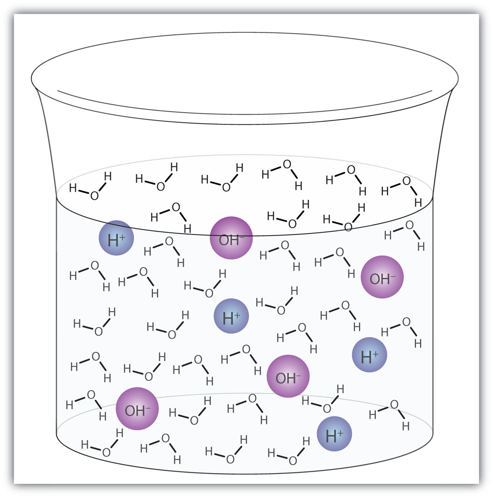

One of the most concentrated acids in the body is stomach acid, which can be approximated as a 0.05 M hydrochloric acid solution. Special cells in the stomach wall secrete this acid, along with special enzymes, as part of the digestion process. In a laboratory, a 0.05 M solution of hydrochloric acid would dissolve some metals. How does the stomach survive the presence of such a reactive acid?
Actually, the stomach has several mechanisms for withstanding this chemical onslaught. First, the lining of the stomach is coated with a thin layer of mucus that contains some bicarbonate ions (HCO3−). These react with the hydrochloric acid to produce water, carbon dioxide, and harmless chloride ions. If any acid penetrates through the mucus, it can attack the surface layer of stomach cells, called the gastric epithelium. Cells in the gastric epithelium are being constantly shed, so damaged cells are quickly removed and replaced with healthy cells.
However, if the gastric epithelium is destroyed faster than it can be replaced, the acid may reach the wall of the stomach, resulting in ulcers. If an ulcer grows large enough, it can expose blood vessels in the stomach wall, causing bleeding. In extreme situations, the loss of blood through a severe ulcer can threaten a person’s health.
Ulcers can also result from the presence of a certain bacterium—Helicobacter pylori—in the stomach. The mechanism for this ulcer formation is not the same as that for ulcers caused by stomach acid and is not completely understood. However, there are two main treatments for ulcers: (1) antacids to react chemically with excess hydrochloric acid in the stomach and (2) antibiotics to destroy the H. pylori bacteria in the stomach.
Many of us are familiar with the group of chemicals called acids. But do you know what it takes for a compound to be an acid? Actually, there are several different definitions of acid that chemistry uses, and each definition is appropriate under different circumstances. Less familiar—but just as important to chemistry and ultimately to us—is the group of chemicals known as bases. Both acids and bases are important enough that we devote an entire chapter to them—their properties and their reactions. Figure 10.1 "Prevalence of Acids and Bases" illustrates how common acids and bases are in everyday life.
One way to define a class of compounds is by describing the various characteristics its members have in common. In the case of the compounds known as acids, the common characteristics include a sour taste, the ability to change the color of the vegetable dye litmus to red, and the ability to dissolve certain metals and simultaneously produce hydrogen gas. For the compounds called bases, the common characteristics are a slippery texture, a bitter taste, and the ability to change the color of litmus to blue. Acids and bases also react with each other to form compounds generally known as salts.
Although we include their tastes among the common characteristics of acids and bases, we never advocate tasting an unknown chemical!
Chemists prefer, however, to have definitions for acids and bases in chemical terms. The Swedish chemist Svante Arrhenius developed the first chemical definitions of acids and bases in the late 1800s. Arrhenius defined an acidA compound that increases the concentration of hydrogen ion (H+) in aqueous solution. as a compound that increases the concentration of hydrogen ion (H+) in aqueous solution. Many acids are simple compounds that release a hydrogen cation into solution when they dissolve. Similarly, Arrhenius defined a baseA compound that increases the concentration of hydroxide ion (OH−) in aqueous solution. as a compound that increases the concentration of hydroxide ion (OH−) in aqueous solution. Many bases are ionic compounds that have the hydroxide ion as their anion, which is released when the base dissolves in water.
Many bases and their aqueous solutions are named using the normal rules of ionic compounds that were presented in Chapter 3 "Ionic Bonding and Simple Ionic Compounds", Section 3.4 "Ionic Nomenclature"; that is, they are named as hydroxide compounds. For example, the base sodium hydroxide (NaOH) is both an ionic compound and an aqueous solution. However, aqueous solutions of acids have their own naming rules. The names of binary acids (compounds with hydrogen and one other element in their formula) are based on the root of the name of the other element preceded by the prefix hydro- and followed by the suffix -ic acid. Thus, an aqueous solution of HCl [designated “HCl(aq)”] is called hydrochloric acid, H2S(aq) is called hydrosulfuric acid, and so forth. Acids composed of more than two elements (typically hydrogen and oxygen and some other element) have names based on the name of the other element, followed by the suffix -ic acid or -ous acid, depending on the number of oxygen atoms in the acid’s formula. Other prefixes, like per- and hypo-, also appear in the names for some acids. Unfortunately, there is no strict rule for the number of oxygen atoms that are associated with the -ic acid suffix; the names of these acids are best memorized. Table 10.1 "Formulas and Names for Some Acids and Bases" lists some acids and bases and their names. Note that acids have hydrogen written first, as if it were the cation, while most bases have the negative hydroxide ion, if it appears in the formula, written last.
The name oxygen comes from the Latin meaning “acid producer” because its discoverer, Antoine Lavoisier, thought it was the essential element in acids. Lavoisier was wrong, but it is too late to change the name now.
Table 10.1 Formulas and Names for Some Acids and Bases
| Formula | Name |
|---|---|
| Acids | |
| HCl(aq) | hydrochloric acid |
| HBr(aq) | hydrobromic acid |
| HI(aq) | hydriodic acid |
| H2S(aq) | hydrosulfuric acid |
| HC2H3O2(aq) | acetic acid |
| HNO3(aq) | nitric acid |
| HNO2(aq) | nitrous acid |
| H2SO4(aq) | sulfuric acid |
| H2SO3(aq) | sulfurous acid |
| HClO3(aq) | chloric acid |
| HClO4(aq) | perchloric acid |
| HClO2(aq) | chlorous acid |
| H3PO4(aq) | phosphoric acid |
| H3PO3(aq) | phosphorous acid |
| Bases | |
| NaOH(aq) | sodium hydroxide |
| KOH(aq) | potassium hydroxide |
| Mg(OH)2(aq) | magnesium hydroxide |
| Ca(OH)2(aq) | calcium hydroxide |
| NH3(aq) | ammonia |
Name each substance.
Solution
Name each substance.
H2Se(aq)
Ba(OH)2(aq)
Notice that one base listed in Table 10.1 "Formulas and Names for Some Acids and Bases"—ammonia—does not have hydroxide as part of its formula. How does this compound increase the amount of hydroxide ion in aqueous solution? Instead of dissociating into hydroxide ions, ammonia molecules react with water molecules by taking a hydrogen ion from the water molecule to produce an ammonium ion and a hydroxide ion:
NH3(aq) + H2O(ℓ) → NH4+(aq) + OH−(aq)Because this reaction of ammonia with water causes an increase in the concentration of hydroxide ions in solution, ammonia satisfies the Arrhenius definition of a base. Many other nitrogen-containing compounds are bases because they too react with water to produce hydroxide ions in aqueous solution.
As we noted previously, acids and bases react chemically with each other to form salts. A salt is a general chemical term for any ionic compound formed from an acid and a base. In reactions where the acid is a hydrogen ion containing compound and the base is a hydroxide ion containing compound, water is also a product. The general reaction is as follows:
acid + base → water + saltThe reaction of acid and base to make water and a salt is called neutralizationThe reaction of acid and base to make water and a salt.. Like any chemical equation, a neutralization chemical equation must be properly balanced. For example, the neutralization reaction between sodium hydroxide and hydrochloric acid is as follows:
NaOH(aq) + HCl(aq) → NaCl(aq) + H2O(ℓ)with coefficients all understood to be one. The neutralization reaction between sodium hydroxide and sulfuric acid is as follows:
2NaOH(aq) + H2SO4(aq) → Na2SO4(aq) + 2H2O(ℓ)Once a neutralization reaction is properly balanced, we can use it to perform stoichiometry calculations, such as the ones we practiced in Chapter 5 "Introduction to Chemical Reactions" and Chapter 6 "Quantities in Chemical Reactions".
Nitric acid [HNO3(aq)] can be neutralized by calcium hydroxide [Ca(OH)2(aq)].
Solution
Because there are two OH− ions in the formula for Ca(OH)2, we need two moles of HNO3 to provide H+ ions. The balanced chemical equation is as follows:
Ca(OH)2(aq) + 2HNO3(aq) → Ca(NO3)2(aq) + 2H2O(ℓ)The salt formed is calcium nitrate.
This calculation is much like the calculations we did in Chapter 6 "Quantities in Chemical Reactions". First we convert the mass of HNO3 to moles using its molar mass of 1.01 + 14.00 + 3(16.00) = 63.01 g/mol; then we use the balanced chemical equation to determine the related number of moles of Ca(OH)2 needed to neutralize it; and then we convert that number of moles of Ca(OH)2 to the mass of Ca(OH)2 using its molar mass of 40.08 + 2(1.01) + 2(16.00) = 74.10 g/mol.
Having concentration information allows us to employ the skills we developed in Chapter 9 "Solutions". First, we use the concentration and volume data to determine the number of moles of Ca(OH)2 present. Recognizing that 805 mL = 0.805 L,
(0.672 M CaOH)2 × (0.805 L soln) = mol Ca(OH)2 = 0.541 mol Ca(OH)2We combine this information with the proper ratio from the balanced chemical equation to determine the number of moles of HNO3 needed:
Now, using the definition of molarity one more time, we determine the volume of acid solution needed:
Hydrocyanic acid [HCN(aq)] can be neutralized by potassium hydroxide [KOH(aq)].
Write a balanced chemical equation for the reaction between these two compounds and identify the salt it produces.
For one reaction, 37.5 g of HCN is present initially. How many grams of KOH are needed to neutralize that much HCN?
In a second reaction, 43.0 mL of 0.0663 M KOH is present initially. What volume of 0.107 M HCN solution is necessary to neutralize the KOH solution?
Hydrocyanic acid (HCN) is one exception to the acid-naming rules that specify using the prefix hydro- for binary acids (acids composed of hydrogen and only one other element).
Give the Arrhenius definitions of an acid and a base.
What is neutralization?
Arrhenius acid: a compound that increases the concentration of hydrogen ion (H+) in aqueous solution; Arrhenius base: a compound that increases the concentration of hydroxide ion (OH−) in aqueous solution.
the reaction of an acid and a base
Give two examples of Arrhenius acids.
Give two examples of Arrhenius bases.
List the general properties of acids.
List the general properties of bases.
Name each compound.
Name each compound.
Propose a name for water (H2O) using the rules for naming acids.
Propose a name for hydrogen peroxide (H2O2) using the rules for naming acids.
Write a balanced chemical equation for the neutralization of Ba(OH)2(aq) with HNO3(aq).
Write a balanced chemical equation for the neutralization of H2SO4(aq) with Cr(OH)3(aq).
How many moles of sodium hydroxide (NaOH) are needed to neutralize 0.844 mol of acetic acid (HC2H3O2)? (Hint: begin by writing a balanced chemical equation for the process.)
How many moles of perchloric acid (HClO4) are needed to neutralize 0.052 mol of calcium hydroxide [Ca(OH)2]? (Hint: begin by writing a balanced chemical equation for the process.)
Hydrazoic acid (HN3) can be neutralized by a base.
Citric acid (H3C6H5O7) has three hydrogen atoms that can form hydrogen ions in solution.
Magnesium hydroxide [Mg(OH)2] is an ingredient in some antacids. How many grams of Mg(OH)2 are needed to neutralize the acid in 158 mL of 0.106 M HCl(aq)? It might help to write the balanced chemical equation first.
Aluminum hydroxide [Al(OH)3] is an ingredient in some antacids. How many grams of Al(OH)3 are needed to neutralize the acid in 96.5 mL of 0.556 M H2SO4(aq)? It might help to write the balanced chemical equation first.
HCl and HNO3 (answers will vary)
sour taste, react with metals, react with bases, and turn litmus red
perhaps hydroxic acid
2HNO3(aq) + Ba(OH)2(aq) → Ba(NO3)2(aq) + 2H2O
0.844 mol
0.488 g
Ammonia (NH3) increases the hydroxide ion concentration in aqueous solution by reacting with water rather than releasing hydroxide ions directly. In fact, the Arrhenius definitions of an acid and a base focus on hydrogen ions and hydroxide ions. Are there more fundamental definitions for acids and bases?
In 1923, the Danish scientist Johannes Brønsted and the English scientist Thomas Lowry independently proposed new definitions for acids and bases. Rather than considering both hydrogen and hydroxide ions, they focused on the hydrogen ion only. A Brønsted-Lowry acidA compound that supplies a hydrogen ion (H+) in a reaction; a proton donor. is a compound that supplies a hydrogen ion in a reaction. A Brønsted-Lowry baseA compound that accepts a hydrogen ion (H+) in a reaction; a proton acceptor., conversely, is a compound that accepts a hydrogen ion in a reaction. Thus, the Brønsted-Lowry definitions of an acid and a base focus on the movement of hydrogen ions in a reaction, rather than on the production of hydrogen ions and hydroxide ions in an aqueous solution.
Let us use the reaction of ammonia in water to demonstrate the Brønsted-Lowry definitions of an acid and a base. Ammonia and water molecules are reactants, while the ammonium ion and the hydroxide ion are products:
NH3(aq) + H2O(ℓ) → NH4+(aq) + OH−(aq)What has happened in this reaction is that the original water molecule has donated a hydrogen ion to the original ammonia molecule, which in turn has accepted the hydrogen ion. We can illustrate this as follows:

Because the water molecule donates a hydrogen ion to the ammonia, it is the Brønsted-Lowry acid, while the ammonia molecule—which accepts the hydrogen ion—is the Brønsted-Lowry base. Thus, ammonia acts as a base in both the Arrhenius sense and the Brønsted-Lowry sense.
Is an Arrhenius acid like hydrochloric acid still an acid in the Brønsted-Lowry sense? Yes, but it requires us to understand what really happens when HCl is dissolved in water. Recall that the hydrogen atom is a single proton surrounded by a single electron. To make the hydrogen ion, we remove the electron, leaving a bare proton. Do we really have bare protons floating around in aqueous solution? No, we do not. What really happens is that the H+ ion attaches itself to H2O to make H3O+, which is called the hydronium ion. For most purposes, H+ and H3O+ represent the same species, but writing H3O+ instead of H+ shows that we understand that there are no bare protons floating around in solution. Rather, these protons are actually attached to solvent molecules.
A proton in aqueous solution may be surrounded by more than one water molecule, leading to formulas like H5O2+ or H9O4+ rather than H3O+. It is simpler, however, to use H3O+.
With this in mind, how do we define HCl as an acid in the Brønsted-Lowry sense? Consider what happens when HCl is dissolved in H2O:
HCl + H2O(ℓ) → H3O+(aq) + Cl−(aq)We can depict this process using Lewis electron dot diagrams:

Now we see that a hydrogen ion is transferred from the HCl molecule to the H2O molecule to make chloride ions and hydronium ions. As the hydrogen ion donor, HCl acts as a Brønsted-Lowry acid; as a hydrogen ion acceptor, H2O is a Brønsted-Lowry base. So HCl is an acid not just in the Arrhenius sense but also in the Brønsted-Lowry sense. Moreover, by the Brønsted-Lowry definitions, H2O is a base in the formation of aqueous HCl. So the Brønsted-Lowry definitions of an acid and a base classify the dissolving of HCl in water as a reaction between an acid and a base—although the Arrhenius definition would not have labeled H2O a base in this circumstance.
All Arrhenius acids and bases are Brønsted-Lowry acids and bases as well. But not all Brønsted-Lowry acids and bases are Arrhenius acids and bases.
Aniline (C6H5NH2) is slightly soluble in water. It has a nitrogen atom that can accept a hydrogen ion from a water molecule just like the nitrogen atom in ammonia does. Write the chemical equation for this reaction and identify the Brønsted-Lowry acid and base.
Solution
C6H5NH2 and H2O are the reactants. When C6H5NH2 accepts a proton from H2O, it gains an extra H and a positive charge and leaves an OH− ion behind. The reaction is as follows:
C6H5NH2(aq) + H2O(ℓ) → C6H5NH3+(aq) + OH−(aq)Because C6H5NH2 accepts a proton, it is the Brønsted-Lowry base. The H2O molecule, because it donates a proton, is the Brønsted-Lowry acid.
Caffeine (C8H10N4O2) is a stimulant found in coffees and teas. When dissolved in water, it can accept a proton from a water molecule. Write the chemical equation for this process and identify the Brønsted-Lowry acid and base.
The Brønsted-Lowry definitions of an acid and a base can be applied to chemical reactions that occur in solvents other than water. The following example illustrates.
Sodium amide (NaNH2) dissolves in methanol (CH3OH) and separates into sodium ions and amide ions (NH2−). The amide ions react with methanol to make ammonia and the methoxide ion (CH3O−). Write a balanced chemical equation for this process and identify the Brønsted-Lowry acid and base.
Solution
The equation for the reaction is between NH2− and CH3OH to make NH3 and CH3O− is as follows:
NH2−(solv) + CH3OH(ℓ) → NH3(solv) + CH3O−(solv)The label (solv) indicates that the species are dissolved in some solvent, in contrast to (aq), which specifies an aqueous (H2O) solution. In this reaction, we see that the NH2− ion accepts a proton from a CH3OH molecule to make an NH3 molecule. Thus, as the proton acceptor, NH2− is the Brønsted-Lowry base. As the proton donor, CH3OH is the Brønsted-Lowry acid.
Pyridinium chloride (C5H5NHCl) dissolves in ethanol (C2H5OH) and separates into pyridinium ions (C5H5NH+) and chloride ions. The pyridinium ion can transfer a hydrogen ion to a solvent molecule. Write a balanced chemical equation for this process and identify the Brønsted-Lowry acid and base.
There are many interesting applications of Brønsted-Lowry acid-base reactions in the pharmaceutical industry. For example, drugs often need to be water soluble for maximum effectiveness. However, many complex organic compounds are not soluble or are only slightly soluble in water. Fortunately, those drugs that contain proton-accepting nitrogen atoms (and there are a lot of them) can be reacted with dilute hydrochloric acid [HCl(aq)]. The nitrogen atoms—acting as Brønsted-Lowry bases—accept the hydrogen ions from the acid to make an ion, which is usually much more soluble in water. The modified drug molecules can then be isolated as chloride salts:
where RN represents some organic compound containing nitrogen. The label (sl aq) means “slightly aqueous,” indicating that the compound RN is only slightly soluble. Drugs that are modified in this way are called hydrochloride salts. Examples include the powerful painkiller codeine, which is commonly administered as codeine hydrochloride. Acids other than hydrochloric acid are also used. Hydrobromic acid, for example, gives hydrobromide salts. Dextromethorphan, an ingredient in many cough medicines, is dispensed as dextromethorphan hydrobromide. The accompanying figure shows another medication as a hydrochloride salt.
Give the definitions of a Brønsted-Lowry acid and a Brønsted-Lowry base.
A Brønsted-Lowry acid is a proton donor, while a Brønsted-Lowry base is a proton acceptor.
Label each reactant as a Brønsted-Lowry acid or a Brønsted-Lowry base.
HCl(aq) + NH3(aq) → NH4+(aq) + Cl−(aq)Label each reactant as a Brønsted-Lowry acid or a Brønsted-Lowry base.
H2O(ℓ) + N2H4(aq) → N2H5+(aq) + OH−(aq)Explain why a Brønsted-Lowry acid can be called a proton donor.
Explain why a Brønsted-Lowry base can be called a proton acceptor.
Write the chemical equation of the reaction of ammonia in water and label the Brønsted-Lowry acid and base.
Write the chemical equation of the reaction of methylamine (CH3NH2) in water and label the Brønsted-Lowry acid and base.
Demonstrate that the dissolution of HNO3 in water is actually a Brønsted-Lowry acid-base reaction by describing it with a chemical equation and labeling the Brønsted-Lowry acid and base.
Identify the Brønsted-Lowry acid and base in the following chemical equation:
C3H7NH2(aq) + H3O+(aq) → C3H7NH3+(aq) + H2O(ℓ)Write the chemical equation for the reaction that occurs when cocaine hydrochloride (C17H22ClNO4) dissolves in water and donates a proton to a water molecule. (When hydrochlorides dissolve in water, they separate into chloride ions and the appropriate cation.)
If codeine hydrobromide has the formula C18H22BrNO3, what is the formula of the parent compound codeine?
HCl: Brønsted-Lowry acid; NH3: Brønsted-Lowry base
A Brønsted-Lowry acid gives away an H+ ion—nominally, a proton—in an acid-base reaction.
NH3 + H2O → NH4+ + OH−; NH3: Brønsted-Lowry base; H2O: Brønsted-Lowry acid
HNO3 + H2O → H3O+ + NO3−; HNO3: Brønsted-Lowry acid; H2O: Brønsted-Lowry base
C17H22NO4+ + H2O → H3O+ + C17H21NO4
Water (H2O) is an interesting compound in many respects. Here, we will consider its ability to behave as an acid or a base.
In some circumstances, a water molecule will accept a proton and thus act as a Brønsted-Lowry base. We saw an example in the dissolving of HCl in H2O:
HCl + H2O(ℓ) → H3O+(aq) + Cl−(aq)In other circumstances, a water molecule can donate a proton and thus act as a Brønsted-Lowry acid. For example, in the presence of the amide ion (see Example 4 in Section 10.2 "Brønsted-Lowry Definition of Acids and Bases"), a water molecule donates a proton, making ammonia as a product:
H2O(ℓ) + NH2−(aq) → OH−(aq) + NH3(aq)In this case, NH2− is a Brønsted-Lowry base (the proton acceptor).
So, depending on the circumstances, H2O can act as either a Brønsted-Lowry acid or a Brønsted-Lowry base. Water is not the only substance that can react as an acid in some cases or a base in others, but it is certainly the most common example—and the most important one. A substance that can either donate or accept a proton, depending on the circumstances, is called an amphiproticA substance that can either donate or accept a proton, depending on the circumstances. compound.
A water molecule can act as an acid or a base even in a sample of pure water. About 6 in every 100 million (6 in 108) water molecules undergo the following reaction:
H2O(ℓ) + H2O(ℓ) → H3O+(aq) + OH−(aq)This process is called the autoionization of waterThe process by which water ionizes into hydronium ions and hydroxide ions as it acts as an acid and a base. (Figure 10.2 "Autoionization") and occurs in every sample of water, whether it is pure or part of a solution. Autoionization occurs to some extent in any amphiprotic liquid. (For comparison, liquid ammonia undergoes autoionization as well, but only about 1 molecule in a million billion (1 in 1015) reacts with another ammonia molecule.)
Figure 10.2 Autoionization
A small fraction of water molecules—approximately 6 in 100 million—ionize spontaneously into hydronium ions and hydroxide ions. This picture necessarily overrepresents the amount of autoionization that really occurs in pure water.
Identify water as either a Brønsted-Lowry acid or a Brønsted-Lowry base.
Solution
Identify water as either a Brønsted-Lowry acid or a Brønsted-Lowry base.
HCOOH(aq) + H2O(ℓ) → H3O+(aq) + HCOO−(aq)
H2O(ℓ) + PO43−(aq) → OH−(aq) + HPO42−(aq)
Explain how water can act as an acid.
Explain how water can act as a base.
Under the right conditions, H2O can donate a proton, making it a Brønsted-Lowry acid.
Under the right conditions, H2O can accept a proton, making it a Brønsted-Lowry base.
Is H2O(ℓ) acting as an acid or a base?
H2O(ℓ) + NH4+(aq) → H3O+(aq) + NH3(aq)Is H2O(ℓ) acting as an acid or a base?
CH3−(aq) + H2O(ℓ) → CH4(aq) + OH−(aq)In the aqueous solutions of some salts, one of the ions from the salt can react with water molecules. In some C2H3O2− solutions, the following reaction can occur:
C2H3O2−(aq) + H2O(ℓ) → HC2H3O2(aq) + OH−(aq)Is H2O acting as an acid or a base in this reaction?
In the aqueous solutions of some salts, one of the ions from the salt can react with water molecules. In some NH4+ solutions, the following reaction can occur:
NH4+(aq) + H2O → NH3(aq) + H3O+(aq)Is H2O acting as an acid or a base in this reaction?
Aluminum hydroxide [Al(OH)3] is amphoteric; it reacts with both acids and bases. Propose the chemical equations for the reactions of Al(OH)3 with H+ and with OH−.
Based on the information in this section, does ammonia (NH3) autoionize more or less than water? Write the chemical equation for the autoionization of ammonia.
base
acid
Al(OH)3 + H+ → HAl(OH)3+; Al(OH)3 + OH− → Al(OH)4−
Acids and bases do not all demonstrate the same degree of chemical activity in solution. Different acids and bases have different strengths.
Let us consider the strengths of acids first. A small number of acids ionize completely in aqueous solution. For example, when HCl dissolves in water, every molecule of HCl separates into a hydronium ion and a chloride ion:
HCl(aq) is one example of a strong acidAn acid that is 100% ionized in aqueous solution., which is a compound that is essentially 100% ionized in aqueous solution. There are very few strong acids. The important ones are listed in Table 10.2 "Strong Acids and Bases (All in Aqueous Solution)".
Table 10.2 Strong Acids and Bases (All in Aqueous Solution)
| Acids | Bases |
|---|---|
| HCl | LiOH |
| HBr | NaOH |
| HI | KOH |
| HNO3 | Mg(OH)2 |
| H2SO4 | Ca(OH)2 |
| HClO4 |
By analogy, a strong baseA base that is 100% ionized in aqueous solution. is a compound that is essentially 100% ionized in aqueous solution. As with acids, there are only a few strong bases, which are also listed in Table 10.2 "Strong Acids and Bases (All in Aqueous Solution)".
If an acid is not listed in Table 10.2 "Strong Acids and Bases (All in Aqueous Solution)", it is likely a weak acidAn acid that is less than 100% ionized in aqueous solution., which is a compound that is not 100% ionized in aqueous solution. Similarly, a weak baseA base that is less than 100% ionized in aqueous solution. is a compound that is not 100% ionized in aqueous solution. For example, acetic acid (HC2H3O2) is a weak acid. The ionization reaction for acetic acid is as follows:
HC2H3O2(aq) + H2O(ℓ) → H3O+(aq) + C2H3O2−(aq)Depending on the concentration of HC2H3O2, the ionization reaction may occur only for 1%–5% of the acetic acid molecules.
Many household products are acids or bases. For example, the owner of a swimming pool may use muriatic acid to clean the pool. Muriatic acid is another name for hydrochloric acid [HCl(aq)]. Vinegar has already been mentioned as a dilute solution of acetic acid [HC2H3O2(aq)]. In a medicine chest, one may find a bottle of vitamin C tablets; the chemical name of vitamin C is ascorbic acid (HC6H7O6).
One of the more familiar household bases is ammonia (NH3), which is found in numerous cleaning products. As we mentioned previously, ammonia is a base because it increases the hydroxide ion concentration by reacting with water:
NH3(aq) + H2O(ℓ) → NH4+(aq) + OH−(aq)Many soaps are also slightly basic because they contain compounds that act as Brønsted-Lowry bases, accepting protons from water and forming excess hydroxide ions. This is one reason that soap solutions are slippery.
Perhaps the most dangerous household chemical is the lye-based drain cleaner. Lye is a common name for sodium hydroxide, although it is also used as a synonym for potassium hydroxide. Lye is an extremely caustic chemical that can react with grease, hair, food particles, and other substances that may build up and form a clog in a pipe. Unfortunately, lye can also attack tissues and other substances in our bodies. Thus, when we use lye-based drain cleaners, we must be very careful not to touch any of the solid drain cleaner or spill the water it was poured into. Safer, nonlye drain cleaners use peroxide compounds to react on the materials in the clog and clear the drain.
Drain cleaners can be made from a reactive material that is less caustic than a base.
Source: Photo used by permission of Citrasolv, LLC.
The behavior of weak acids and bases illustrates a key concept in chemistry. Does the chemical reaction describing the ionization of a weak acid or base just stop when the acid or base is done ionizing? Actually, no. Rather, the reverse process—the reformation of the molecular form of the acid or base—occurs, ultimately at the same rate as the ionization process. For example, the ionization of the weak acid HC2H3O2 (aq) is as follows:
HC2H3O2(aq) + H2O(ℓ) → H3O+(aq) + C2H3O2−(aq)The reverse process also begins to occur:
H3O+(aq) + C2H3O2−(aq) → HC2H3O2(aq) + H2O(ℓ)Eventually, there is a balance between the two opposing processes, and no additional change occurs. The chemical reaction is better represented at this point with a double arrow:
HC2H3O2(aq) + H2O(ℓ) ⇆ H3O+(aq) + C2H3O2−(aq)The ⇆ implies that both the forward and reverse reactions are occurring, and their effects cancel each other out. A process at this point is considered to be at chemical equilibrium (or equilibrium)The condition in which the extent of a chemical reaction does not change any further.. It is important to note that the processes do not stop. They balance out each other so that there is no further net change; that is, chemical equilibrium is a dynamic equilibrium.
Write the equilibrium chemical equation for the partial ionization of each weak acid or base.
Solution
Write the equilibrium chemical equation for the partial ionization of each weak acid or base.
HF(aq)
AgOH(aq)
Hydrofluoric acid [HF(aq)] is one chemical that reacts directly with glass. (Very few chemicals react with glass.) Hydrofluoric acid is used in glass etching.
Finally, you may realize that the autoionization of water is actually an equilibrium process, so it is more properly written with the double arrow:
H2O(ℓ) + H2O(ℓ) ⇆ H3O+(aq) + OH−(aq)One qualitative measure of the strength of an acid or a base solution is the pH scaleA logarithmic scale that relates the concentration of the hydrogen ion in solution., which is based on the concentration of the hydronium (or hydrogen) ion in aqueous solution. A neutral (neither acidic nor basic) solution, one that has the same concentration of hydrogen and hydroxide ions, has a pH of 7. A pH below 7 means that a solution is acidic, with lower values of pH corresponding to increasingly acidic solutions. A pH greater than 7 indicates a basic solution, with higher values of pH corresponding to increasingly basic solutions. Thus, given the pH of several solutions, you can state which ones are acidic, which ones are basic, and which are more acidic or basic than others. Table 10.3 "The pH Values of Some Common Solutions" lists the pH of several common solutions. Notice that some biological fluids are nowhere near neutral.
Table 10.3 The pH Values of Some Common Solutions
| Solution | pH |
|---|---|
| battery acid | 0.3 |
| stomach acid | 1–2 |
| lemon or lime juice | 2.1 |
| vinegar | 2.8–3.0 |
| Coca-Cola | 3 |
| wine | 2.8–3.8 |
| beer | 4–5 |
| coffee | 5 |
| milk | 6 |
| urine | 6 |
| pure H2O | 7 |
| (human) blood | 7.3–7.5 |
| sea water | 8 |
| antacid (milk of magnesia) | 10.5 |
| NH3 (1 M) | 11.6 |
| bleach | 12.6 |
| NaOH (1 M) | 14.0 |
Weak acids and bases are relatively common. You may notice from Table 10.3 "The pH Values of Some Common Solutions" that many food products are slightly acidic. They are acidic because they contain solutions of weak acids. If the acid components of these foods were strong acids, the food would likely be inedible.
Explain the difference between a strong acid or base and a weak acid or base.
Explain what is occurring when a chemical reaction reaches equilibrium.
Define pH.
A strong acid or base is 100% ionized in aqueous solution; a weak acid or base is less than 100% ionized.
The overall reaction progress stops because the reverse process balances out the forward process.
pH is a measure of the hydrogen ion concentration.
Name a strong acid and a weak acid.
Name a strong base and a weak base.
Is each compound a strong acid or a weak acid? Assume all are in aqueous solution.
Is each compound a strong acid or a weak acid? Assume all are in aqueous solution.
Is each compound a strong base or a weak base? Assume all are in aqueous solution.
Is each compound a strong base or a weak base? Assume all are in aqueous solution.
Write the chemical equation for the equilibrium process for each weak acid in Exercise 3.
Write the chemical equation for the equilibrium process for each weak acid in Exercise 4.
Write the chemical equation for the equilibrium process for each weak base in Exercise 5.
Write the chemical equation for the equilibrium process for each weak base in Exercise 6.
Which is the stronger acid—HCl(aq) or HF(aq)?
Which is the stronger base—KOH(aq) or Ni(OH)2(aq)?
Consider the two acids in Exercise 11. For solutions that have the same concentration, which one would you expect to have a lower pH?
Consider the two bases in Exercise 12. For solutions that have the same concentration, which one would you expect to have a higher pH?
Consider the list of substances in Table 10.3 "The pH Values of Some Common Solutions". What is the most acidic substance on the list that you have encountered recently?
Consider the list of substances in Table 10.3 "The pH Values of Some Common Solutions". What is the most basic substance on the list that you have encountered recently?
strong acid: HCl; weak acid: HC2H3O2 (answers will vary)
3a: HF(aq) ⇆ H+(aq) + F−(aq); 3b: HC2H3O2(aq) ⇆ H+(aq) + C2H3O2−(aq)
5a: NH3(aq) + H2O ⇆ NH4+(aq) + OH−(aq); 5d: Cu(OH)2(aq) ⇆ Cu2+(aq) + 2OH−(aq)
HCl(aq)
HCl(aq)
(answers will vary)
As indicated in Section 10.4 "The Strengths of Acids and Bases", weak acids are relatively common, even in the foods we eat. But we occasionally come across a strong acid or base, such as stomach acid, that has a strongly acidic pH of 1–2. By definition, strong acids and bases can produce a relatively large amount of hydrogen or hydroxide ions and, as a consequence, have a marked chemical activity. In addition, very small amounts of strong acids and bases can change the pH of a solution very quickly. If 1 mL of stomach acid [which we will approximate as 0.05 M HCl(aq)] is added to the bloodstream, and if no correcting mechanism is present, the pH of the blood would go from about 7.4 to about 4.9—a pH that is not conducive to continued living. Fortunately, the body has a mechanism for minimizing such dramatic pH changes.
The mechanism involves a bufferA solution that resists dramatic changes in pH., a solution that resists dramatic changes in pH. Buffers do so by being composed of certain pairs of solutes: either a weak acid plus a salt derived from that weak acid or a weak base plus a salt of that weak base. For example, a buffer can be composed of dissolved acetic acid (HC2H3O2, a weak acid) and sodium acetate (NaC2H3O2, a salt derived from that acid). Another example of a buffer is a solution containing ammonia (NH3, a weak base) and ammonium chloride (NH4Cl, a salt derived from that base).
Let us use an acetic acid–sodium acetate buffer to demonstrate how buffers work. If a strong base—a source of OH−(aq) ions—is added to the buffer solution, those hydroxide ions will react with the acetic acid in an acid-base reaction:
HC2H3O2(aq) + OH−(aq) → H2O(ℓ) + C2H3O2−(aq)Rather than changing the pH dramatically by making the solution basic, the added hydroxide ions react to make water, and the pH does not change much.
Many people are aware of the concept of buffers from buffered aspirin, which is aspirin that also has magnesium carbonate, calcium carbonate, magnesium oxide, or some other salt. The salt acts like a base, while aspirin is itself a weak acid.
If a strong acid—a source of H+ ions—is added to the buffer solution, the H+ ions will react with the anion from the salt. Because HC2H3O2 is a weak acid, it is not ionized much. This means that if lots of hydrogen ions and acetate ions (from sodium acetate) are present in the same solution, they will come together to make acetic acid:
H+(aq) + C2H3O2−(aq) → HC2H3O2(aq)Rather than changing the pH dramatically and making the solution acidic, the added hydrogen ions react to make molecules of a weak acid. Figure 10.3 "The Action of Buffers" illustrates both actions of a buffer.
Figure 10.3 The Action of Buffers

Buffers can react with both strong acids (top) and strong bases (bottom) to minimize large changes in pH.
Buffers made from weak bases and salts of weak bases act similarly. For example, in a buffer containing NH3 and NH4Cl, ammonia molecules can react with any excess hydrogen ions introduced by strong acids:
NH3(aq) + H+(aq) → NH4+(aq)while the ammonium ion [NH4+(aq)] can react with any hydroxide ions introduced by strong bases:
NH4+(aq) + OH−(aq) → NH3(aq) + H2O(ℓ)Which solute combinations can make a buffer solution? Assume all are aqueous solutions.
Solution
Which solute combinations can make a buffer solution? Assume all are aqueous solutions.
NaHCO3 and NaCl
H3PO4 and NaH2PO4
NH3 and (NH4)3PO4
NaOH and NaCl
Buffers work well only for limited amounts of added strong acid or base. Once either solute is all reacted, the solution is no longer a buffer, and rapid changes in pH may occur. We say that a buffer has a certain capacityThe amount of strong acid or base a buffer can counteract.. Buffers that have more solute dissolved in them to start with have larger capacities, as might be expected.
Human blood has a buffering system to minimize extreme changes in pH. One buffer in blood is based on the presence of HCO3− and H2CO3 [H2CO3 is another way to write CO2(aq)]. With this buffer present, even if some stomach acid were to find its way directly into the bloodstream, the change in the pH of blood would be minimal. Inside many of the body’s cells, there is a buffering system based on phosphate ions.
At this point in this text, you should have the idea that the chemistry of blood is fairly complex. Because of this, people who work with blood must be specially trained to work with it properly.
A blood bank technology specialist is trained to perform routine and special tests on blood samples from blood banks or transfusion centers. This specialist measures the pH of blood, types it (according to the blood’s ABO+/− type, Rh factors, and other typing schemes), tests it for the presence or absence of various diseases, and uses the blood to determine if a patient has any of several medical problems, such as anemia. A blood bank technology specialist may also interview and prepare donors to give blood and may actually collect the blood donation.
Blood bank technology specialists are well trained. Typically, they require a college degree with at least a year of special training in blood biology and chemistry. In the United States, training must conform to standards established by the American Association of Blood Banks.
Explain how a buffer prevents large changes in pH.
A buffer has components that react with both strong acids and strong bases to resist sudden changes in pH.
Describe a buffer. What two related chemical components are required to make a buffer?
Can a buffer be made by combining a strong acid with a strong base? Why or why not?
Which solute combinations can make a buffer? Assume all are aqueous solutions.
Which solute combinations can make a buffer? Assume all are aqueous solutions.
For each combination in Exercise 3 that is a buffer, write the chemical equations for the reactions of the buffer components when a strong acid and a strong base is added.
For each combination in Exercise 4 that is a buffer, write the chemical equations for the reaction of the buffer components when a strong acid and a strong base is added.
The complete phosphate buffer system is based on four substances: H3PO4, H2PO4−, HPO42−, and PO43−. What different buffer solutions can be made from these substances?
Explain why NaBr cannot be a component in either an acidic or a basic buffer.
Two solutions are made containing the same concentrations of solutes. One solution is composed of phosphoric acid and sodium phosphate, while the other is composed of hydrocyanic acid and sodium cyanide. Which solution should have the larger capacity as a buffer?
Two solutions are made containing the same concentrations of solutes. One solution is composed of ammonia and ammonium nitrate, while the other is composed of sulfuric acid and sodium sulfate. Which solution should have the larger capacity as a buffer?
A buffer resists sudden changes in pH. It has a weak acid or base and a salt of that weak acid or base.
3b: strong acid: H+ + NO2− → HNO2; strong base: OH− + HNO2 → H2O + NO2−; 3d: strong acid: H+ + NH3 → NH4+; strong base: OH− + NH4+ → H2O + NH3
Buffers can be made by combining H3PO4 and H2PO4−, H2PO4− and HPO42−, and HPO42− and PO43−.
the phosphoric acid–phosphate buffer
To ensure that you understand the material in this chapter, you should review the meanings of the bold terms in the following summary and ask yourself how they relate to the topics in the chapter.
The earliest chemical definition of an acid, the Arrhenius definition, says that an acid is a compound that increases the amount of hydrogen ion (H+) in aqueous solution. An Arrhenius base is a compound that increases the amount of hydroxide ion (OH−) in aqueous solution. While most bases are named as ionic hydroxide compounds, aqueous acids have a naming system unique to acids. Acids and bases react together in a characteristic chemical reaction called neutralization, in which the products are water and a salt. The principles of stoichiometry, along with the balanced chemical equation for a reaction between an acid and a base, can be used to determine how much of one compound will react with a given amount of the other.
A Brønsted-Lowry acid is any substance that donates a proton to another substance. A Brønsted-Lowry base is any substance that accepts a proton from another substance. The reaction of ammonia with water to make ammonium ions and hydroxide ions can be used to illustrate Brønsted-Lowry acid and base behavior.
Some compounds can either donate or accept protons, depending on the circumstances. Such compounds are called amphiprotic. Water is one example of an amphiprotic compound. One result of water being amphiprotic is that a water molecule can donate a proton to another water molecule to make a hydronium ion and a hydroxide ion. This process is called the autoionization of water and occurs in any sample of water.
Not all acids and bases are equal in chemical strength. A strong acid is an acid whose molecules are all dissociated into ions in aqueous solution. Hydrochloric acid is an example of a strong acid. Similarly, a strong base is a base whose molecules are dissociated into ions in aqueous solution. Sodium hydroxide is an example of a strong base. Any acid or base whose molecules are not all dissociated into ions in aqueous solution is a weak acid or a weak base. Solutions of weak acids and weak bases reach a chemical equilibrium between the un-ionized form of the compound and the dissociated ions. It is a dynamic equilibrium because acid and base molecules are constantly dissociating into ions and reassociating into neutral molecules.
The pH scale is a scale used to express the concentration of hydrogen ions in solution. A neutral solution, neither acidic nor basic, has a pH of 7. Acidic solutions have a pH lower than 7, while basic solutions have a pH higher than 7.
Buffers are solutions that resist dramatic changes in pH when an acid or a base is added to them. They contain a weak acid and a salt of that weak acid, or a weak base and a salt of that weak base. When a buffer is present, any strong acid reacts with the anion of the salt, forming a weak acid and minimizing the presence of hydrogen ions in solution. Any strong base reacts with the weak acid, minimizing the amount of additional hydroxide ions in solution. However, buffers only have limited capacity; there is a limit to the amount of strong acid or strong base any given amount of buffer will react with.
The properties of a 1.0 M HCl solution and a 1.0 M HC2H3O2 solution are compared. Measurements show that the hydrochloric acid solution has a higher osmotic pressure than the acetic acid solution. Explain why.
Of a 0.50 M HNO3 solution and a 0.50 M HC2H3O2 solution, which should have the higher boiling point? Explain why.
The reaction of sulfuric acid [H2SO4(aq)] with sodium hydroxide [NaOH(aq)] can be represented by two separate steps, with only one hydrogen ion reacting in each step. Write the chemical equation for each step.
The reaction of aluminum hydroxide [Al(OH)3(aq)] with hydrochloric acid [HCl(aq)] can be represented by three separate steps, with only one hydroxide ion reacting in each step. Write the chemical equation for each step.
A friend brings you a small sample of an unknown chemical. Assuming that the chemical is soluble in water, how would you determine if the chemical is an acid or a base?
A neutral solution has a hydrogen ion concentration of about 1 × 10−7 M. What is the concentration of the hydroxide ion in a neutral solution?
The Lewis definitions of an acid and a base are based on electron pairs, not protons. A Lewis acid is an electron pair acceptor, while a Lewis base is an electron pair donor. Use Lewis diagrams to show that
H+(aq) + OH−(aq) → H2O(ℓ)is an acid-base reaction in the Lewis sense as well as in the Arrhenius and Brønsted-Lowry senses.
Given the chemical reaction
NH3(g) + BF3(g) → NH3—BF3(s)show that the reaction illustrated by this equation is an acid-base reaction if we use the Lewis definitions of an acid and a base (see Exercise 7). The product contains a bond between the N and B atoms.
HCl is a strong acid and yields more ions in solution.
H2SO4 + NaOH → NaHSO4 + H2O; NaHSO4 + NaOH → Na2SO4 + H2O
One way is to add it to NaHCO3; if it bubbles, it is an acid. Alternatively, add the sample to litmus and look for a characteristic color change (red for acid, blue for base).
The O atom is donating an electron pair to the H+ ion, making the base an electron pair donor and the acid an electron pair acceptor.